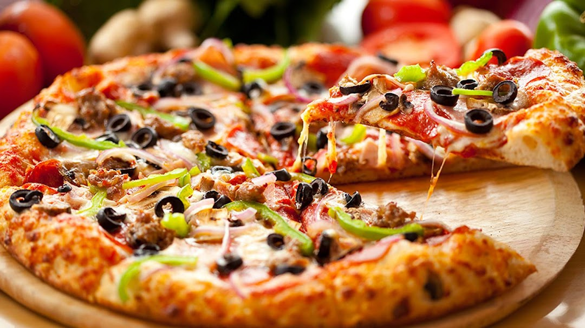

Picerija je osnovana 1995 godine, sa zeljom da se pokrene porodicni biznis i da na ovaj nacin obezbedimo dugi niz godina zaposlenja i sigurnog rada, makar za clanove nase porodice.
Bavimo se narduzbinama po zelji koju mozete uneti na stranici Picerija.